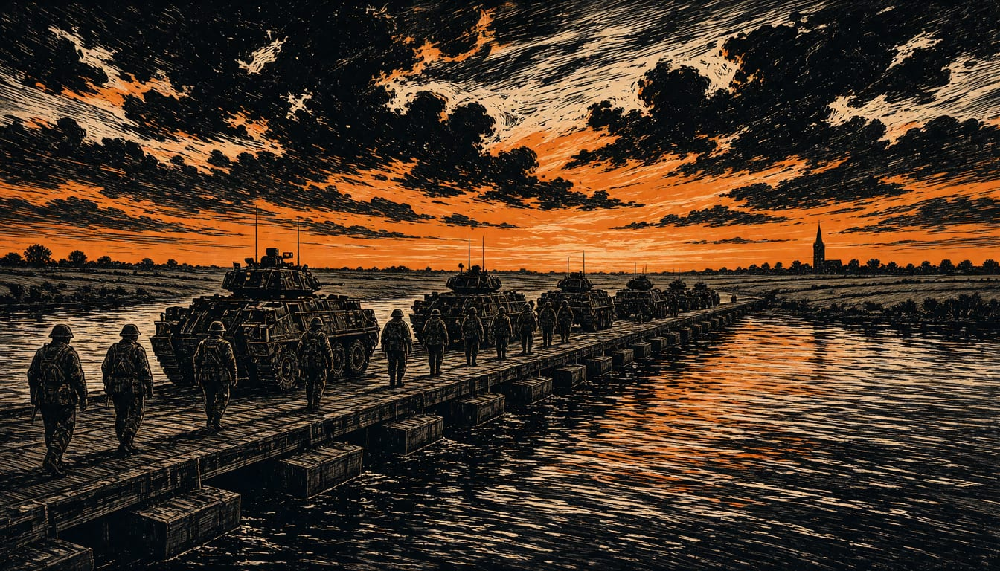

German brigade drills in Lithuania with Dutch troops ahead of 2027 stationing
Exercises Freedom Shield 26-II and Grand Eagle 26 run from 6 November to 3 December, with about 3,800 soldiers from Panzerbrigade 45 taking part. A planning conference this November is to settle the final details for full stationing by the end of 2027.

German soldiers, backed by troops from six other NATO countries including the Netherlands, begin two exercises in Lithuania on 6 November, running until 3 December: Freedom Shield 26-II and Grand Eagle 26. Two days before that, kam.lt, the news site of the Lithuanian defence ministry, reports that German Defence Minister Boris Pistorius and his Lithuanian counterpart Robertas Kaunas signed a Declaration on Strategic Defence Cooperation on 4 November at the Munich Security Conference.
Kam.lt reports about 2,000 military and civilian personnel are expected by the end of 2026, about 1,700 there by September 2026. Kaunas named faster military mobility procedures, air defence and drone protection as priorities in the declaration. He called the agreement historic and said the brigade remains the axis of cooperation with Germany.
Freedom Shield 26-II and Grand Eagle 26 put soldiers from the 45th Armoured Brigade Lietuva and the 37th Mechanised Infantry Brigade Freistaat Sachsen in the field. Both units answer to the German Army's 10th Panzer Division. The division coordinates more than 6,000 troops on the ground. It provides command of the brigades from Veitshöchheim in Bavaria, from alerting until every unit returns home.
Firmenpresse.de reports that Panzerbrigade 45 starts its Freedom Shield 26-II drill on 17 November for ten days. The outlet calls it the largest Bundeswehr field exercise in Lithuania so far. The outlet counts about 3,800 soldiers in the brigade for the drill. During the exercise, new loitering munition systems are tested for the first time. Its central element is a water crossing over the Nemunas River south of Kaunas. Freedom Shield 26-II ends with a six-day field training exercise at Rudninkai.
The next step comes in November, when a Planning Conference is to settle the final stationing details for the brigade. Lithuania's draft plan puts the bulk movement in the second half of 2027. The brigade is to be fully stationed in the country by the end of that year. Brigade 37 stays in place as NATO's rapid reaction force until Brigade 45 takes over.